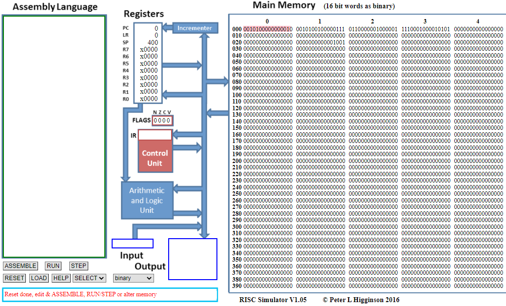

Références :
- Equipe pédagogique DIU EIL, Université de Nantes.
- Jeu d'instructions du simulateur RISC de Peter Higgison
- Cours de David Roche sur le Modèle d'architecture de von Neumann
Germain BECKER, Lycée Mounier, ANGERS

Vous trouverez ci-dessous une capture d'écran du simulateur RISC développé par Peter Higginson : https://peterhigginson.co.uk/RISC/

Q1 : Identifiez, en les entourant, les 4 parties de l'architecture de von Neumann sur ce simulateur. Entourez également le CPU et localisez les registres PC et IR.
Q2 : Traduisez par des phrases chacune des instructions du programme en langage d'assemblage suivant (aidez-vous du tableau donné dans le cours) :
MOV R0,#34
STR R0,33
HLTOuvrez le simulateur à l'adresse https://peterhigginson.co.uk/RISC/ et sélectionnez "binary" dans le menu déroulant "OPTIONS" afin d'obtenir une visualisation de la mémoire en binaire (comme c'est le cas en réalité). Vous devez obtenir un écran similaire à la capture donnée au-dessus.
Q3 : Recopiez dans la partie de gauche "Assembly Language" le programme ci-dessus et validez en cliquant sur le bouton "Submit". Le programme a été traduit en langage machine et est stocké dans la mémoire à partir de l'adresse 0. Repérez et recopiez sur votre feuille les mots binaires de ce programme en langage machine.
Q4 : Exécutez le programme pas à pas en cliquant sur le bouton STEP à chaque étape (vous pouvez diminuer ou augmenter la vitesse de l'animation) en prenant soin d'observer et comprendre ce qu'il se passe. Pour chaque instruction, rédigez de manière détaillés ce qu'il se passe en faisant le lien avec le cours.
Q1 : Traduire par des phrases chacune des instructions machine du programme suivant :
MOV R0,#34
MOV R1,#5
SUB R0,#30
ADD R0,R0,R1
STR R0,12
HLTQ2 : Quels sont les états des registres à la fin du programme et quelle est la valeur stockée dans la case mémoire 12 ?
Q3 : Recopiez le programme dans le simulateur, lancez l'exécution et observez ce qu'il se passe à chaque étape en faisant le lien avec le cours.
Il existe d'autres instructions que celles que l'on a vues (pour information, la liste complète est disponible à l'adresse http://www.peterhigginson.co.uk/RISC/instruction_set.pdf).
En voici quelques unes importantes concernant les comparaisons et sauts (ruptures de séquence) qui permettent de faire des tests (instructions conditionnelles).
Q1 : En vous aidant du tableau ci-dessus, traduisez chacune des instructions suivantes.
Q2 : Donnez l'instruction en assembleur correspondant à la phrase suivante : Si la valeur située dans le registre R3 est inférieure ou égale à la valeur 5, l'instruction suivante est située à l'adresse mémoire 40.
En réalité, on va plutôt utiliser des étiquettes (ou label en anglais) avec les opérations BRA,BRA, BEQ, BNE, BGT, BLT, BRA : on remplace l'adresse mémoire qui suit ces opérations par le nom de l'étiquette. On peut alors définir nous même les instructions de chaque étiquette et donc de chaque partie du programme correspondant à un saut.
C'est l'assembleur qui se charge lui-même de convertir une étiquette en adresse mémoire.
Par exemple, voici un programme en assembleur dans lequel on utilise une étiquette appelée Sinon. On a traduit chaque ligne :
MOV R0,#5 // stocke le nombre 5 dans R0
MOV R2,#6 // stocke le nombre 6 dans R0
CMP R0,R2 // Compare R0 et R2
BNE Sinon // Si R0 != R2, saute à l'étiquette Sinon
ADD R0,R0,R2 // R0 <- R0 + R2
STR R0,42 // stocke la valeur de R0 en mémoire à l'adresse 42
HLT // arrête l'exécution du programme
Sinon SUB R0,R0,R2 // R0 <- R0 - R2
STR R0,42 // stocke la valeur de R0 en mémoire à l'adresse 42
HLT // arrête l'exécution du programmeQ3 : Proposez un programme Python pouvant correspondre à ce programme en langage d'assemblage. On nommera a et b les variables correspondant aux registres R0 et R2. (Indication : il y a une instruction conditionnelle à bien formaliser).
Q4 : Traduisez en langage d'assemblage le programme Python suivant
a = 3
b = 2
if a <= 5:
b = a + b
else:
a = a + 3
Le jeu d'instructions du simulateur RISC donne le code binaire de toutes les opérations. On a regroupé dans le tableau ci-dessous certaines d'entre elles.
| Code d'opération | En langage assembleur | Description |
|---|---|---|
| 0000 0 | HLT | Arrêt de l'exécution du programme |
| 0001 0 | ADD Rd,#nb | Ajoute le nombre nb à la valeur du registre Rd et stocke le résultat dans Rd |
| 0001 1 | SUB Rd,#nb | Soustrait le nombre nb à la valeur du registre Rd et stocke le résultat dans Rd |
| 0010 0 | CMP Rb,#nb | Compare le nombre nb à la valeur du registre Rb |
| 0010 1 | MOV Rd,#nb | Stocke le nombre nb dans le registre Rd |
| 0110 000 | ADD Rd,Rs,Rb | Ajoute la valeur de Rb à celle de Rs et stocke le résultat dans Rd |
| 0110 001 | SUB Rd,Rs,Rb | Soustrait la valeur de Rb à celle de Rs et stocke le résultat dans Rd |
| 100... | BRA/B<cond> | Instructions de saut --> voir tableau suivant |
| 1110 | STR Rd,adr | Stocke la valeur du registre Rd à l'adresse mémoire adr |
| 1111 | LDR Rd,adr | Charge dans le registre Rd la valeur située à l'adresse mémoire adr |
| 0111 0110 10 | CMP Rd,Rs | Compare la valeur de Rs à celle de Rd |
Les instructions de saut ont un code de la forme 100x xxxa aaaa aaaa où xxxx correspond au type de comparaison (sur 4 bits) et aaaaaaaaa correspond à l'adresse mémoire (de l'étiquette en général) sur 9 bits. Voici un tableau récapitulatif :
| Code d'opération | En langage assembleur |
|---|---|
| 1000 000 | BRA |
| 1000 001 | BEQ |
| 1000 010 | BNE |
| 1001 100 | BGT |
| 1001 101 | BLT |
Tous ces codes d'opérations traduisent les opérations HTL, ADD, SUB, CMP, etc. Elles sont à compléter par les valeurs binaires des opérandes.
Dans le cas du simulateur RISC :
Q1 : Identifiez dans chaque instruction machine, le code d'opération et la valeur des opérandes du langage assembleur.
| Instruction machine | En langage assembleur |
|---|---|
| 0010101000001011 | MOV R2,#8 |
| 0110001011000001 | ADD R5,R4,R1 |
| 1000010000110100 | BNE 50 |
Q2 : Traduisez en langage machine les instructions correspondant à l'instruction : CMP R3,#13.
Même question avec : BLT 20.
Q3 : Retrouvez les instructions en assembleur correspondant au code machine suivant en jouant le rôle de l'unité de contrôle (UC) lors de la phase de décodage.
0010100000000101
1111001000001100
0110000001001000
1110001000001101
0000000000000000Écrivez en assembleur les instructions correspondant à l'algorithme suivant :
s ← 0
Lire x
Tant que x >= 0 faire
s ← s + x
Lire x
fin Tant que
Afficher sOn supposera que les variables s et x sont stockées respectivement dans les registres R0 et R1.
Vous utiliserez à bon escient la documentation du simulateur RISC : http://www.peterhigginson.co.uk/RISC/instruction_set.pdf.
Par exemple, l'instruction Lire x s'écrit INP R1,2.
Références :
Germain BECKER, Lycée Mounier, ANGERS